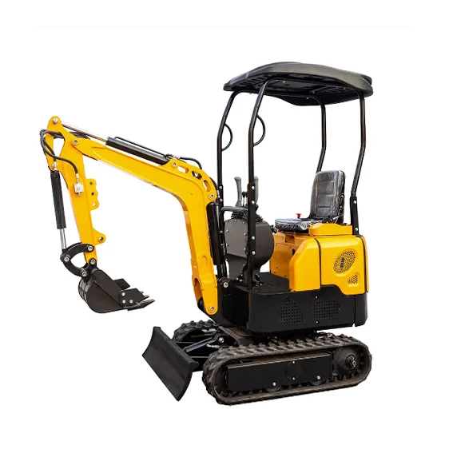
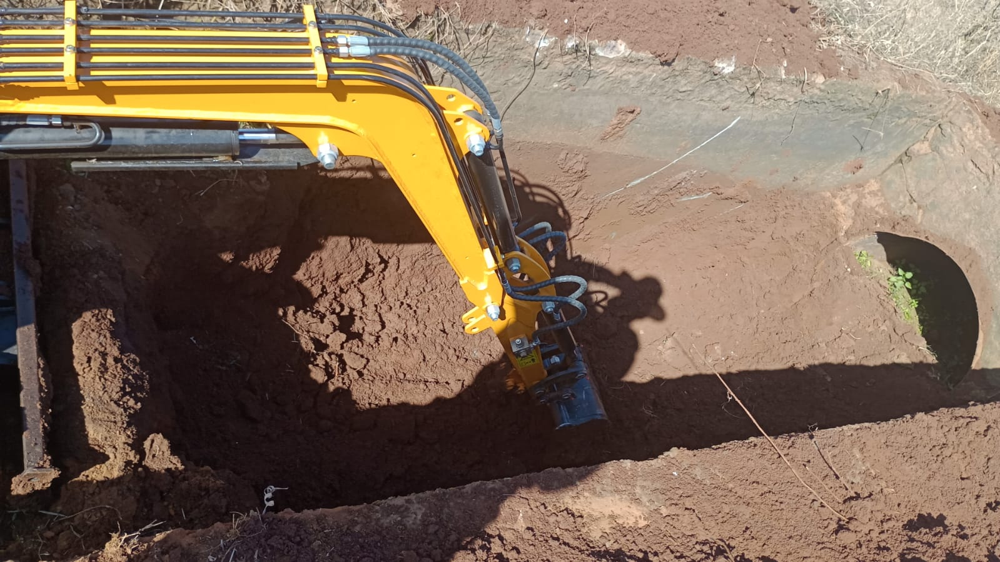
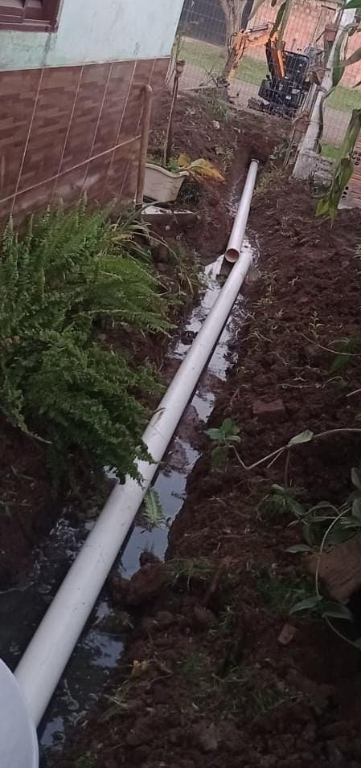
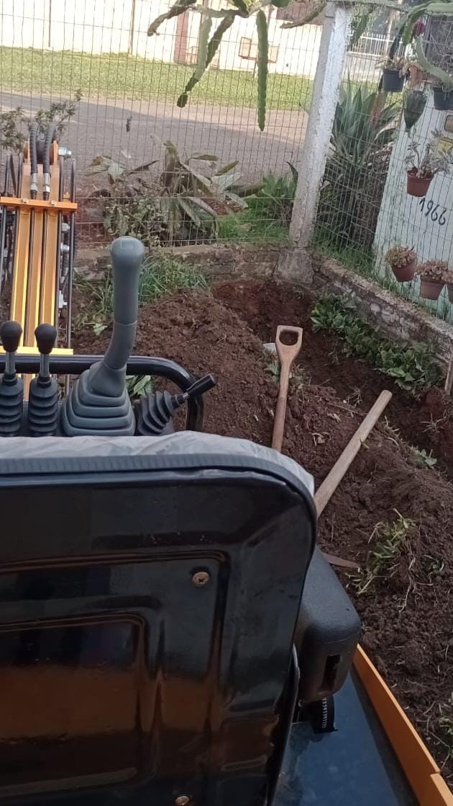
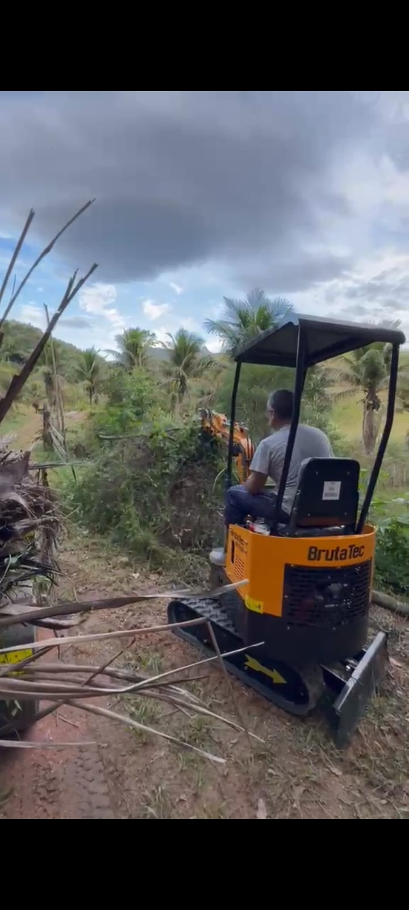

Novos Equipamentos — Broca e Concha Menor!


Uma mini escavadeira é uma máquina compacta de terraplenagem montada sobre esteiras ou rodas, projetada para realizar trabalhos pesados de escavação e movimentação de terra. Ela substitui o trabalho manual pesado, substituindo dias de esforço braçal por apenas algumas horas de operação ágil e precisa,proporcionando rapidez,economia e precisão mesmo em locais com pouco espaço.
São Borja-RS e região.
(55) 98409-6327
(55) 99154-6414

Descrição: A escavação é a remoção controlada de terra e rochas para abrir espaço em fundações, valas e subsolos.

Descrição: É essencial na construção civil e infraestrutura para instalar redes de água, esgoto, cabos elétricos.

Descrição: É preparar o terreno para receber uma obra, deixando-o plano, estável e dentro das cotas de projeto.
Descrição: Na abertura de piscinas, ela substitui o trabalho manual pesado, garantindo agilidade e precisão.

Descrição: Remove vegetação e entulhos para preparar o terreno rapidamente.